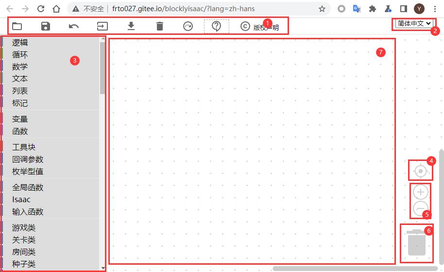
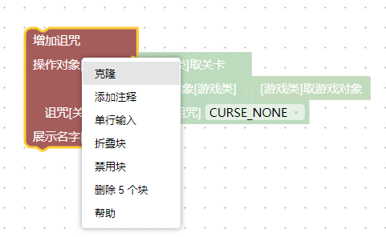
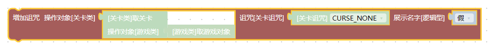
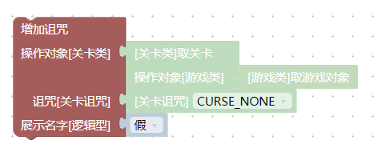
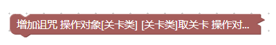
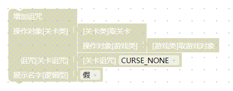
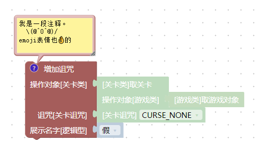

基本操作
基本的编辑器界面主要由以下部件构成：

- 工具栏，从左到右依次为
打开按钮，可以打开biml工程文件保存按钮，可以将当前的积木内容保存为biml工程文件撤销按钮，也可以按ctrl+z来撤销，还可以按ctrl+shift+z来重做，也就是“撤销撤销”复制到游戏控制台按钮，点击后可以根据积木程序来生成一条控制台指令，在游戏的控制台上按ctrl+v即可执行。是一种方便的执行逻辑的方式。导出lua程序按钮，可以将积木程序导出为main.lua文件，此文件可放在mod中生效。清空按钮，清空当前的所有积木。下载离线版本按钮，点击后跳转到离线版本程序的网站，此按钮在离线编辑器中不存在。打开教程文档按钮，点击后打开此文档的主页版权声明按钮，编辑器的版权为MIT License开源许可。
- 语言选项，在这里可以切换语言
- 目前只有中文在持续维护
- 工具箱，所有的
积木都可以在这里找到 - 缩放重置按钮，点击后，，所有的积木回到视野正中心。
- 缩放按钮
- 删除按钮，将不需要的
积木拖拽到这里删除，也可以右键删除一个积木，或选中一个块后按键盘的del键 - 工作区，在这里摆放积木
右键菜单功能
当我们右键一个积木的时候，会弹出一个菜单：

克隆，再复制一个一模一样的积木，可以使用快捷键ctrl+c然后马上按ctrl+v来实现。- 受限于程序接口，网页版本的在线编辑器不支持跨页面的复制粘贴。也就是如果同时打开两个编辑器的话，在其中一个编辑器中复制的内容，无法粘贴到另一个编辑器中，因此右键菜单不单独提供
复制粘贴选项。如果下载可执行的本地离线版本，则没有此限制。
- 受限于程序接口，网页版本的在线编辑器不支持跨页面的复制粘贴。也就是如果同时打开两个编辑器的话，在其中一个编辑器中复制的内容，无法粘贴到另一个编辑器中，因此右键菜单不单独提供
添加注释，给积木写一段标注文字，这段文字没有实际作用，是给人看的。单行输入，切换到单行输入模式。折叠块，将积木折叠起来，不会影响到原本功能，但看着会更省地方。禁用块，这会导致当前的积木完全失效。删除x个块，删除积木。帮助，跳转到相关的帮助文档。对于Blockly内置的积木，将跳转到对应逻辑的维基百科或其它相关页面。对于以撒的结合游戏中的功能积木，将跳转到IsaacDoc文档，此文档为lua编程时使用的文档，与以撒的积木工程中的积木块是严格对应的。- IsaacDoc文档由开源社区维护，记录了游戏的各个模块的使用方式、bug等。个别
积木由于BUG无法使用，则可能会记录在此文档中。
- IsaacDoc文档由开源社区维护，记录了游戏的各个模块的使用方式、bug等。个别
- 其它，个别积木会有其它特殊的选项。
单行输入模式
右键菜单中的单行输入模式会让一个积木的所有输入嵌入进来，和原本的外部输入模式在功能上完全相同，但可以方便摆放。
单行输入模式：

外部输入模式：

折叠块
右键菜单中的折叠块会让块缩小，来方便摆放：

禁用块
禁用一个块之后，这个块的功能就会失效，就好像它被删除了一样。但可以通过右键再次启用：

注释
右键一个块可以添加注释，这会在块的左上角标记一个问号，点击这个问号之后，会跳出一个文本框，文本框的内容可以随意编辑，并随着biml工程文件保存和加载。
注释是一个重要的交流工具，你可以在一个积木上添加注释，告诉别人你在做什么。或者防止自己下次看到以后忘记自己做过什么。
